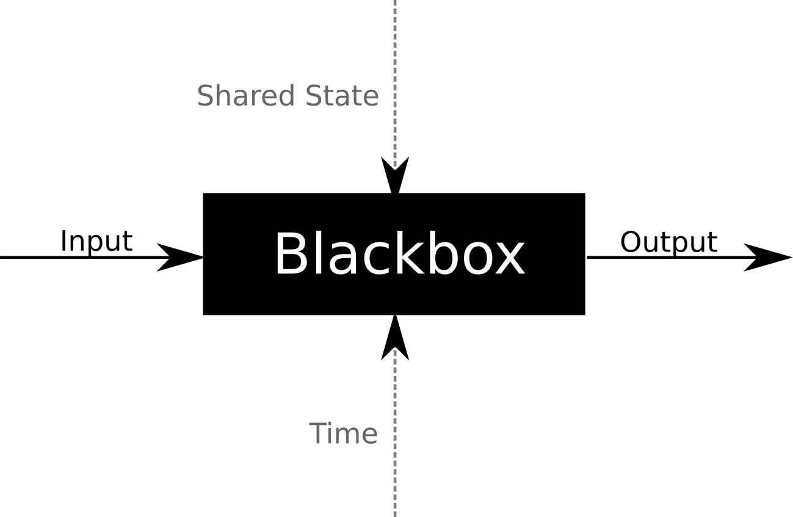
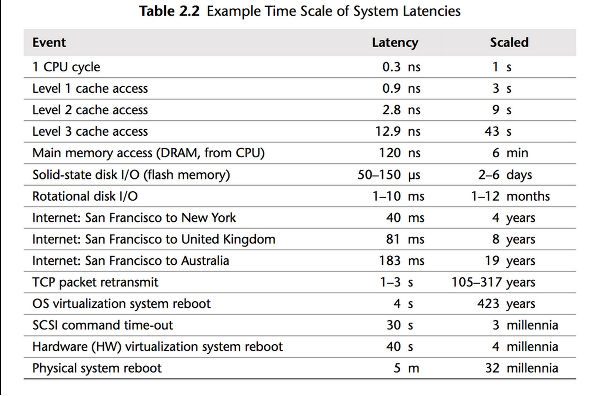

Scala
Building Higher-Level Abstractions
Alexandru Nedelcu
Software Engineer @ eloquentix.com
Functional Programming
class BankAccount(val id: String, totalAmount: BigDecimal) {
private[this] var _totalAmount = totalAmount
def statement = _totalAmount
def withdraw(amount: BigDecimal): Boolean = {
if (_totalAmount >= amount) {
_totalAmount = _totalAmount - amount
true
}
else
false
}
def deposit(amount: BigDecimal): Unit = {
_totalAmount = _totalAmount + amount
}
}
Should a == b?
val a = new BankAccount("Alex", 10000.0)
val b = new BankAccount("Alex", 10000.0)
a == b //=> false (with the default equals)
Mutability introduces an implicit input parameter: Time
\[\begin{aligned} a_{t_i} == b_{t_j} \end{aligned} \]
Object Identity
2 mutable objects can only be equal if you're talking about the same memory location
Structural Equality cannot work for
mutable objects
class BankAccount(val id: String, totalAmount: BigDecimal) {
private[this] var _totalAmount = totalAmount
def statement = _totalAmount
def withdraw(amount: BigDecimal): Boolean =
if (_totalAmount >= amount) {
_totalAmount = _totalAmount - amount
true
}
else
false
def deposit(amount: BigDecimal): Unit = {
_totalAmount = _totalAmount + amount
}
// BROKEN !!!!
def equals(o: AnyRef) = o match {
case other: BankAccount =>
id == other.id && totalAmount && other.totalAmount
case _ =>
false
}
}
What is Mutability?
An object is mutable if its (functional) behavior depends on its history
-- Martin Odersky
What does this mean?
\[\begin{aligned} x = x + y \end{aligned} \]
\[\begin{aligned} x_{t_i} = x_{t_{i - a}} + y_{t_{i - b}} \end{aligned} \]
With mutability, time is implicit in everything
The Ideal

- encapsulation
- composability
- reusability
Reality
What is Functional Programming?
What is Functional Programming?
... emphasizes on functions that produce results that depend only on their inputs and not on the program state—i.e. pure mathematical functionswikipedia.org/wiki/Functional_programming
What is Functional Programming?
... emphasizes on components that
deal with time.
Going Immutable
class BankAccount(val id: String, val statement: BigDecimal) {
def withdraw(amount: BigDecimal): (Boolean, BankAccount) =
if (statement >= amount)
(true, new BankAccount(id, statement - amount))
else
(false, this)
def deposit(amount: BigDecimal): BankAccount =
new BankAccount(id, statement + amount)
override def equals(ref: AnyRef) = ref match {
case other: BankAccount if other =>
id == other.id && statement == other.statement
case _ =>
false
}
override def hashCode =
31 * id.hashCode + statement.hashCode
}
Going Immutable
Tip: use case classes + vals
/**
* Notes:
* - case classes are meant for defining immutable objects
* - id, statement are final and public
* - case classes come with structural equals and hashCode
*/
case class BankAccount(id: String, statement: BigDecimal) {
def withdraw(amount: BigDecimal) =
if (statement >= amount)
(true, BankAccount(id, statement - amount))
else
(false, this)
def deposit(amount: BigDecimal) =
BankAccount(id, statement + amount)
}
No need to hide private mutable state
case class BankAccount(id: String, statement: BigDecimal)
object BankAccount {
def withdraw(amount: BigDecimal)(account: BankAccount) =
if (account.statement >= amount)
(true, BankAccount(account.id, account.statement - amount))
else
(false, account)
def deposit(amount: BigDecimal)(account: BankAccount) =
BankAccount(account.id, account.statement + amount)
}
val myAccount = BankAccount("Alex", 10000.0)
BankAccount.withdraw(1000)(myAccount)
//=> (true, BankAccount(Alex,9000.0))
BankAccount.withdraw(1000)(myAccount)
//=> (true, BankAccount(Alex,9000.0))
BankAccount.withdraw(12000)(myAccount)
//=> (false, BankAccount(Alex,10000.0))
Algebraic Data Types
sealed trait Transaction {
def timestamp: DateTime
}
case class Withdraw(amount: BigDecimal, timestamp: DateTime)
extends Transaction
case class Deposit(amount: BigDecimal, timestamp: DateTime)
extends Transaction
val t: Transaction = Withdraw(1000, DateTime.now)
val transactionAmount = t match {
case Withdraw(amount, _) => amount
}
//=> <console>:13: warning: match may not be exhaustive.
//=> It would fail on the following input: Deposit(_, _)
//=> t match {
//=> ^
Handling time explicitly
case class BankAccount(id: String, transactions: Seq[Transaction]) {
lazy val lastStatement = {
var result = 0.0
for (transaction <- transactions)
transaction match {
case Withdraw(amount, _) =>
result = result - amount
case Deposit(amount, _) =>
result = result + amount
}
result
}
def statement(now: DateTime) = {
var result = 0.0
for (transaction <- transactions)
if (transaction.timestamp <= now)
transaction match {
case Withdraw(amount, _) =>
result = result - amount
case Deposit(amount, _) =>
result = result + amount
}
result
}
}
Using the Scala Collections API
sealed trait Transaction {
def timestamp: DateTime
def asBigDecimal = this match {
case Withdraw(amount, _) => -amount
case Deposit(amount, _) => amount
}
}
// ....
case class BankAccount(id: String, transactions: Seq[Transaction]) {
lazy val lastStatement =
transactions.map(_.asBigDecimal).sum
def statement(now: DateTime) =
transactions
.filter(_.timestamp <= now)
.map(_.asBigDecimal).sum
}
Atomic References
import java.util.concurrent.atomic.AtomicReference
class MutableBankAccount(account: BankAccount) {
private[this] val ref = new AtomicReference(account)
def deposit(amount: BigDecimal): Unit =
while (true) {
val current = ref.get
val update = current.deposit(amount)
if (ref.compareAndSet(current, update))
return
}
def withdraw(amount: BigDecimal): Boolean = {
while (true) {
val current = ref.get
if (current.statement >= amount) {
val (success, newAccount) = current.withdraw(amount)
if (ref.compareAndSet(expect=current, update=newAccount))
return success
}
else
return false
}
}
}
Atomic References
Self tail-recursive functions
import java.util.concurrent.atomic.AtomicReference
class MutableBankAccount(account: BankAccount) {
private[this] val ref = new AtomicReference(account)
@tailrec
def deposit(amount: BigDecimal): Unit = {
val current = ref.get
val update = current.deposit(amount)
if (!ref.compareAndSet(current, update))
deposit(amount)
}
@tailrec
def withdraw(amount: BigDecimal): Boolean = {
val current = ref.get
val (success, update) = current.withdraw(amount)
if (!ref.compareAndSet(current, update))
withdraw(amount)
else
success
}
}
Decoupling Algorithms from Data
object BankAccount {
def deposit(amount: BigDecimal, now: DateTime)(account: BankAccount) = {
val transactions = account.transactions :+ Deposit(amount, now)
BankAccount(account.id, transactions)
}
def withdraw(amount: BigDecimal, now: DateTime)(account: BankAccount) = {
if (account.statement(now) >= amount) {
val transactions = account.transactions :+ Withdraw(amount, now)
(true, BankAccount(account.id, transactions))
}
else
(false, account)
}
}
Rich Hickey calls the mixture between algorithms and data complecting (i.e. the opposite of simple).
Do watch his Simple Made Easy
presentation.
Working with Concurrency and Paralelism
Atomic References
Common pattern - transformAndGet
final class Atomic[S] (initialValue: S) {
def get: S = ???
def compareAndSet(expected: S, updated: S): Boolean = ???
@tailrec
def transformAndGet(f: T => T): T = {
val current = ref.get()
val update = f(current)
if (!ref.compareAndSet(current, update))
transformAndGet(f)
else
update
}
}
val account = Atomic(BankAccount("Alex"))
// deposits 1000
account.transformAndGet(BankAccount.deposit(1000))
//=> res: BankAccount = BankAccount(Alex,List(Deposit(1000.0,2014-05-13)))
Atomic References
Common pattern - transformAndExtract
final class Atomic[S] {
def get: S = ???
def compareAndSet(expected: S, updated: S): Boolean = ???
@tailrec
def transformAndExtract(f: S => (A, S)): A = {
val current = get
val (result, update) = f(current)
if (!compareAndSet(current, update))
transformAndExtract(f)
else
result
}
}
val account = Atomic(BankAccount("Alex"))
// withdraws, returning `true` on success or `false` on failure
account.transformAndExtract(BankAccount.withdraw(11000.0))
//=> res: Boolean = false
Atomic References
Non-Blocking Algorithms FTW!
Non-blocking means that no matter what thread gets interrupted by the system's scheduler, the other threads can still make progress, or in other words there is no thread that can hold up system-wide progress.
Atomic References
A Concurrent, Non-blocking Queue
import scala.collections.immutable.Queue
val queue = new Atomic(Queue.empty[String])
queue.transform(_.enqueue("Hello, "))
queue.transform(_.enqueue("world!"))
queue.transformAndExtract(_.dequeue)
//=> res: String = "Hello, "
queue.transformAndExtract(_.dequeue)
//=> res: String = "world!"
Homework
Compare the simplicity of this with the famous algorithm for non-blocking concurrent queues by Maged M. Michael and Michael L. Scott, also implemented in Java's own ConcurrentLinkedQueue.
Atomic References
Any immutable data-structure can become
a mutable non-blocking data-structure
import scala.collections.immutable.Map
val cache = new Atomic(Map.empty[String, Any])
cache.transform(_.updated("username", "Alex"))
cache.get.get("username")
//=> Some("Alex")
// removal
cache.transform(m => m - "username")
Atomic References
Non-Blocking Algorithms FTW!
Atomic references can be used to generate non-blocking lock-free behavior by wrapping any immutable object.
This includes any Scala immutable data-structure - List, Vector, Queue, Map, Set, Stream, etc...
Futures and Promises
I/O Latencies
java.util.concurrent.Future
public interface Future<V> {
boolean cancel(boolean);
boolean isCanceled();
boolean isDone();
V get();
V get(long, TimeUnit);
}
Problems:
- blocking
- non-composable
Scala's Future
Developed as part of Akka and integrated in
Scala's standard library since 2.10.0
trait Future[+T] extends Awaitable[T] {
abstract def isCompleted: Boolean
abstract def onComplete[U](func: Try[T] => U)(implicit ec: ExecutionContext): Unit
// ....
}
Scala's Future
import concurrent.ExecutionContext.Implicits.global
import concurrent.Future
val f: Future[String] = Future {
"Hello, world!"
}
f.onComplete {
case Success(value) =>
println(value)
case Failure(ex) =>
System.err.println(ex.getMessage)
}
Scala's Future
Blocking for the Result
import concurrent.ExecutionContext.Implicits.global
import concurrent.{Future, Await}
import concurrent.duration._
val f: Future[String] = Future {
"Hello, world!"
}
val result = Await.result(f, 10.seconds)
println(result)
Future.foreach
import concurrent.ExecutionContext.Implicits.global
import concurrent.{Future, Await}
import concurrent.duration._
val f: Future[String] = Future {
"Hello, world!"
}
f.foreach { value => println(value) }
Future.foreach
import concurrent.ExecutionContext.Implicits.global
import concurrent.{Future, Await}
import concurrent.duration._
def squareRoot(x: BigDecimal) = Future {
math.sqrt(x)
}
for (value <- squareRoot(4)) println(value)
//=> 2
Future.map
import concurrent.ExecutionContext.Implicits.global
import concurrent.{Future, Await}
import concurrent.duration._
def squareRoot(x: BigDecimal) = Future {
math.sqrt(x)
}
val plus2 = squareRoot(4).map(x => x + 2)
//=> Future(4.0)
Future.map
import concurrent.ExecutionContext.Implicits.global
import concurrent.{Future, Await}
import concurrent.duration._
def squareRoot(x: BigDecimal) = Future {
math.sqrt(x)
}
val plus2 = for (value <- squareRoot(4)) yield value + 2
//=> Future(4.0)
What's a Monad?
On Monads
- Just a very abstract design pattern
- A Monad is a context
- Allows you to keep the context while operating on values
- Allows you to avoid dealing with side-effects when specifying data transformations
Future[T] is a Monad
- It's a container
- It's a context
- You can operate on Future values without pulling them out of their context
A Monad must implement ...
- a constructor
- map[U](f: T => U): M[U]
-
Either of:
- flatten()
- flatMap[U](f: T => M[U]): M[U]
Future.flatMap
Example using Shade, my own Memcached client, built on top of SpyMemcached, exposing a Future-enabled API.
val client = shade.Memcached(Configuration("127.0.0.1:11211"), global)
val future =
client.get[String]("username") flatMap {
case Some(value) =>
Future.successful("Hello, " + value + "!")
case None =>
client.set("username", "Alex", 30.seconds) map { _ =>
"Hello, anonymous!"
}
}
Scala-Async
The C# Async functionality, implemented in Scala a library.
val client = shade.Memcached(Configuration("127.0.0.1:11211"), global)
val future = async {
val value = await(client.get[String]("username"))
value match {
case Some(value) =>
"Hello, " + value + "!"
case None =>
await(client.set("username", "Alex", 30.seconds))
"Hello, anonymous!"
}
}
Asynchronous Queue
final class AsyncQueue[T](elems: T*) {
def offer(elem: T): Unit = ???
def poll(): Future[T] = ???
}
Asynchronous Queue (offer)
final class AsyncQueue[T](elems: T*) {
private[this] case class State(
elements: Queue[T],
promises: Queue[Promise[T]]
)
private[this] val state =
Atomic(State(Queue(elems : _*), Queue.empty))
def offer(elem: T): Unit = {
val p = state.transformAndExtract {
case State(elements, promises) =>
if (promises.nonEmpty) {
val (p, q) = promises.dequeue
(Some(p), State(elements, q))
}
else
(None, State(elements.enqueue(elem), promises))
}
p.foreach(_.success(elem))
}
// ...
}
Asynchronous Queue (poll)
final class AsyncQueue[T](elems: T*) {
private[this] case class State(
elements: Queue[T],
promises: Queue[Promise[T]]
)
private[this] val state =
Atomic(State(Queue(elems : _*), Queue.empty))
def poll(): Future[T] =
state.transformAndExtract {
case State(elements, promises) =>
if (elements.nonEmpty) {
val (e, newQ) = elements.dequeue
(Future.successful(e), State(newQ, promises))
}
else {
val p = Promise[T]()
(p.future, State(elements, promises.enqueue(p)))
}
}
// ...
}
Asynchronous Semaphore
final class AsyncSemaphore(limit: Int)(implicit ec: ExecutionContext) {
def acquire[T](f: => Future[T]): Future[T] = ???
}
Can be used to asynchonously limit
the number of requests done in parallel
val semaphore = new AsyncSemaphore(30)
// ...
semaphore.acquire {
WS.url("http://google.com").get()
}
Asynchronous Semaphore
final class AsyncSemaphore(limit: Int)(implicit ec: ExecutionContext) {
private[this] val queue = {
val elems = for (i <- 0 until limit) yield ()
AsyncQueue(elems :_*)
}
def acquire[T](f: => Future[T])(implicit ec: ExecutionContext): Future[T] =
queue.poll().flatMap { _ =>
f.onComplete { _ => queue.offer(()) }
f
}
}
Streams
Streams
The Iterator
trait Iterator[+T] {
def hasNext(): Boolean
def next(): T
}
The Iterable
trait Iterable[+T] {
def iterator(): Iterator[T]
}
trait Iterable[+T] { self =>
def iterator(): Iterator[T]
def map[U](f: T => U) =
new Iterable[U] {
def iterator() = {
val source = self.iterator()
new Iterator[U] {
def hasNext() = source.hasNext()
def next() = f(source.next())
}
}
}
}
Usage:
Iterable(1,2,3).map(_ * 2).foreach(x => println(x))
//=> 2
//=> 4
//=> 6
The problem with Iterator
trait Iterator[+T] {
def hasNext(): Boolean
def next(): T
}
The problem with Iterator
trait Iterator[+T] {
def hasNext(): Boolean
def next(): T
}
Usage is blocking - blocks the current thread, waiting for the next element.
Lets fix it!
() => Try[Option[T]]
Lets fix it - by reversing the arrow!
Try[Option[T]] => ()
Introducing Rx - Reactive Streams
trait Observer[-T] {
def onNext(elem: T): Unit
def onError(ex: Throwable): Unit
def onComplete(): Unit
}
trait Observable[+T] {
def subscribe(o: Observer[T]): Unit
}
Introducing Rx - Reactive Streams
Introducing back-pressure by signaling demand with Future[T]
trait Observer[-T] {
def onNext(elem: T): Future[T]
def onError(ex: Throwable): Unit
def onComplete(): Unit
}
trait Observable[+T] {
def subscribe(o: Observer[T]): Unit
}
Introducing Rx - Reactive Streams
We can then define our operators / combinators
trait Observable[+T] { self =>
def subscribe(o: Observer[T]): Unit
def map[U](f: T => U): Observable[U] =
new Observable[U] {
def subscribe(o: Observer[U]) =
self.subscribe(new Observer[T] {
def onNext(elem: T) = o.onNext(f(elem))
def onError(ex: Throwable) = o.onError(ex)
def onComplete() = o.onComplete()
})
}
}
Project Monifu
Reactive Streams, Atomic References ...
Shameless plug :-)
Resources for Getting Started
- Scala for the Impatient, by Cay Horstmann - a book for beginners
- Functional Programming in Scala, by Paul Chiusano and Rúnar Bjarnason -- one of the best books on functional programming out there
- Coursera's Functional Programming Course, taught by Martin Odersky
- Other Resources -- a blog post I wrote
The End?
PS: We are Hiring @ eloquentix.com